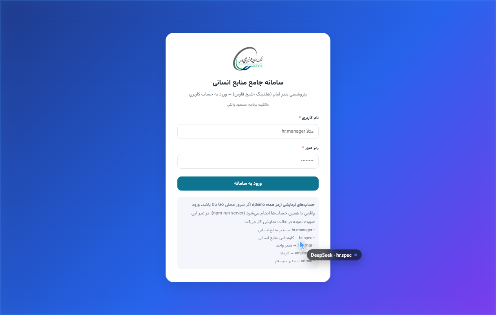

امور کارکنان و پروندهٔ پرسنلی
واحد امور کارکنان · کارگزینی و خدمات پرسنلی
پروندهٔ تبیندی هر کارمند با مشخصات پایه، عکس کارگزینی، مدرک ملاک، سابقه، قرارداد و اسناد، حضور و کارکرد و سوابق تغییرات.
یک سامانهٔ یکپارچه برای همهٔ کارهای ادارهٔ منابع انسانی: پروندهٔ پرسنلی و قراردادها، حضور و غیاب و نوبتکاری، حقوق و دستمزد با فایلهای قانونی بیمه و مالیات، عملکرد و آموزش، رفاه و کارتهای خدماتی، ساختار سازمانی و انتصابات، گزارشهای مدیریتی و تنظیمات پارامتریک چندشرکتی. سامانه روی دادهٔ واقعی کار میکند و همین حالا قابل آزمایش است.
یک هسته، چند نقش.
پنهانکردن منو در رابط، امنیت نیست؛ محدودهٔ دسترسی
(all / own_unit / own) در کوئری سرور اعمال میشود.
اچآر اپ از سه لایهٔ روشن ساخته شده است: هستهٔ قواعد (اعتبارسنجی، محاسبهٔ حقوق، مرخصی، تقویم شمسی و دسترسی)، سرور (مرجع نهایی داده و دسترسی) و رابط کاربری (فقط نمایش و ناوبری). این تفکیک یعنی هیچ قاعدهٔ کسبوکاری در رابط کاربری تکرار نمیشود؛ پس عدد حقوق، ماندهٔ مرخصی و فهرست دسترسی در همهٔ صفحهها، فایلها و اسناد چاپی یکی است.

هر ماژول مرز روشن خودش را دارد: جدول، سرویس، دسترسی و مستندات فارسی مستقل — و در همان حال با بقیهٔ ماژولها یکپارچه است. چند نمونهٔ شاخص:
پروندهٔ تبیندی هر کارمند با مشخصات پایه، عکس کارگزینی، مدرک ملاک، سابقه، قرارداد و اسناد، حضور و کارکرد و سوابق تغییرات.
دورهٔ پردازش، اجزای حقوق، مزد مبنا و شاکلهٔ آن، فیش حقوقی، احکام، فایل قانونی بیمه و مالیات و فایل پرداخت بانکی.
ثبت تردد، ورود فایل دستگاه تردد، برنامهٔ نوبت و پوشش، تأخیر و شبکاری، مرخصی و ماموریت با گردش تأیید.
نمودار و جدول تفصیلی واحدها، شناسنامهٔ پست، متصدی جاری، قاعدهٔ احراز شرایط، سابقهٔ انتصاب و تاریخچهٔ تغییرات سمت.
تسهیلات و درخواستهای رفاهی، سرویس مدارس، اسکان، پتروکارت و نفتکارت با سقف افراد تحت تکفل، پاداش تحصیلی و پاداشها.
داشبورد آماری، برشهای آماری، گزارشساز بر پایهٔ اقلام، گزارشهای مدیریتی و صفحهٔ عمومی تأیید سند/کارمند با QR و امضای HMAC.
اعتبارسنجی، محاسبهٔ حقوق و مرخصی، تقویم شمسی و دسترسی، همه از هستهٔ بومی میآید. اگر هسته بار نشود، برنامه محاسبه نمیکند و خطای صریح میدهد؛ نسخهٔ دومی از قواعد در جاوااسکریپت ساخته نمیشود.
محدودهٔ دسترسی نقش در کوئری سرور اعمال میشود و پنهانکردن یک دکمه در مرورگر، جای کنترل دسترسی را نمیگیرد. هر عمل، سابقهٔ حسابرسی خودش را دارد.
از مانیفست هر ماژول، رجیستری سرور، منوی برنامه، جدول سیاست دسترسی، انواع داده و مستندات فارسی ساخته میشود؛ هر انحراف، ساخت خودکار را میشکند.

این وبسایت، نسخهٔ نمایشی است برای معرفی؛ اما سامانهٔ واقعی روی همین رایانه اجرا میشود. با یکی از حسابهای آزمایشی وارد شوید و فرآیندها را روی دادهٔ واقعی ببینید: تأیید مرخصی، ورود فایل تردد دستگاه، پردازش حقوق، صدور فیش و مشاهدهٔ فایلهای قانونی.
ادارههای فعال، ماژولهای روشن، پارامترهای حقوقی‑مالی و مشخصات برند هر شرکت، داده است نه کد. سرور، برنامهٔ موبایل و نمونهٔ تحت وب، هر سه از همان یک فایل استقرار ساخته میشوند.
| شرکت | هلدینگ | کد | ادارهٔ فعال | ماژول فعال | کارکنان |
|---|---|---|---|---|---|
| پتروشیمی بندر امام استقرار مرجع | هلدینگ خلیج فارس | BIPC | |||
| ستاد هلدینگ خلیج فارس | هلدینگ خلیج فارس | PGH | |||
| شرکت پتروشیمی نمونه | هلدینگ نمونه | SPC | |||
| شرکت خدمات و پیمانکاری نمونه | هلدینگ نمونه | CSC |
فهرست کامل استقرارها ۱۵ شرکت است و از فرم «شرکتها و استقرارها» در ماژول تنظیمات، قابل ثبت و ویرایش است.